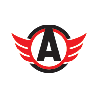

Статистика матча
—
1-е место на Востоке
Металлург выиграл четыре из шести последних встреч, последнюю — 4:2 18 октября.
Галкин, Слепышев, Шашков; под вопросом Воробьёв
Силантьев
Уральское дерби. В четырёх из пяти последних матчей Металлурга было больше 5.5 шайбы.
Форма — последние матчи, самый свежий справа. В — победа, Н — ничья, П — поражение.
Разбор матча
В четырёх из пяти последних матчей Металлурга было больше 5.5 шайбы, а Автомобилист выиграл четыре игры подряд и забивает много.
Лидер Востока захочет реабилитироваться за 2:5 от Сибири. У хозяев нет трёх нападающих, что может открыть игру. Коэффициент 2.20 даёт небольшой перевес.
Автомобилист — Металлург: прогноз на уральское дерби
В субботу в Екатеринбурге проходит уральское дерби: Автомобилист принимает лидера Восточной конференции Металлург. Хозяева выиграли четыре матча подряд, а магнитогорцы 29 октября неожиданно проиграли Сибири 2:5. Вместо ставки на исход мы выбираем результативный сценарий — тотал больше 5.5 шайбы.
Форма команд
Автомобилист после поражения в Магнитогорске 2:4 выдал серию из четырёх побед: 3:1 в гостях у СКА, 5:1 над ЦСКА, 4:1 над Барысом и 3:2 по буллитам над Торпедо. В этом отрезке команда забила 15 шайб в четырёх матчах.
Металлург забивает много, но в обороне у него случаются провалы. Последние результаты: 4:2 с Автомобилистом, 4:5 по буллитам с Салаватом, 5:1 с Сибирью, 3:2 с Нефтехимиком и 2:5 с той же Сибирью. В четырёх из этих пяти матчей было шесть и более шайб.
Составы и потери
У Автомобилиста серьёзные потери в атаке: не сыграют Галкин, Слепышев и Шашков, под вопросом Воробьёв. Это может снизить результативность хозяев, но и заставит их играть более рискованно, открываясь в обороне. У Металлурга травмирован Силантьев, остальной состав в порядке.
Очные встречи
Металлург выиграл четыре из шести последних матчей с Автомобилистом. В последней встрече 18 октября магнитогорцы победили 4:2 — шесть шайб, ровно столько, сколько нужно для нашей ставки.
Мотивация и тактика
После разгрома от Сибири Металлург захочет быстро реабилитироваться, а Автомобилист на домашнем льду будет защищать победную серию. Дерби на Урале редко бывают закрытыми: обе команды любят играть в атакующий хоккей с большим количеством бросков. При этом хозяева без трёх нападающих могут чаще ошибаться в обороне, что на руку магнитогорцам.
Ключевые цифры перед матчем
В пяти последних матчах Металлурга забито 33 шайбы — в среднем 6.6 за игру. В пяти последних играх Автомобилиста — 26, то есть больше пяти за матч, и это с учётом трёх игр, где соперник забил одну шайбу. Магнитогорцы выиграли четыре из шести последних дерби, а 18 октября победили 4:2. Ставка на тотал не зависит от того, кто победит, и это плюс в равном матче. Победная серия хозяев тоже построена на атаке: пять шайб ЦСКА и четыре Барысу.
Коэффициенты на исход показывают, что букмекеры считают гостей фаворитами даже после поражения в Новосибирске: победа Металлурга в основное время идёт за 2.12, Автомобилиста — за 3.01.
Варианты ставок
- Тотал больше 5.5 за 2.20 — основной прогноз
- Победа Металлурга с форой 0 за 1.65
- П2 в основное время за 2.12
Коэффициент 2.20 предполагает вероятность около 45%. Учитывая, как часто матчи Металлурга превышают 5.5 шайбы, мы оцениваем шансы в 47%. Перевес небольшой, поэтому уверенность низкая.
Итог: прогноз на матч Автомобилист — Металлург
Наш прогноз — тотал больше 5.5 за 2.20. Металлург регулярно играет результативно, у Автомобилиста забивная серия, а в последнем дерби было шесть шайб. Риск — кадровые потери хозяев в атаке и возможная осторожная игра гостей после крупного поражения.
Вопросы о матче
Кто победит в матче Автомобилист — Металлург?
Фаворит у букмекеров — Металлург (2.12 в основное время), но мы выбираем ставку на тотал больше 5.5 за 2.20.
Сколько шайб будет в уральском дерби?
Ждём шесть и более: в четырёх из пяти последних матчей Металлурга было больше 5.5 шайбы.
Кто не сыграет за Автомобилист?
Галкин, Слепышев и Шашков, под вопросом Воробьёв.
Во сколько начинается матч?
31 октября в 15:00 по московскому времени в Екатеринбурге.
Прогноз — оценка вероятности исхода, а не гарантия результата.